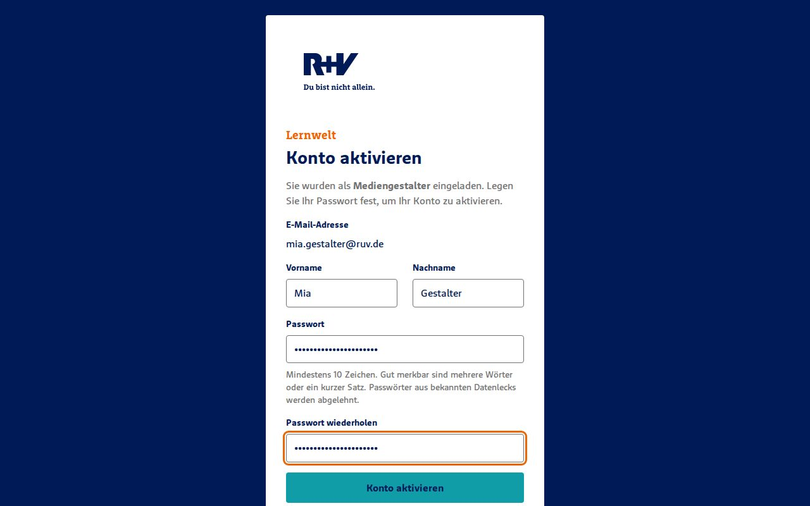
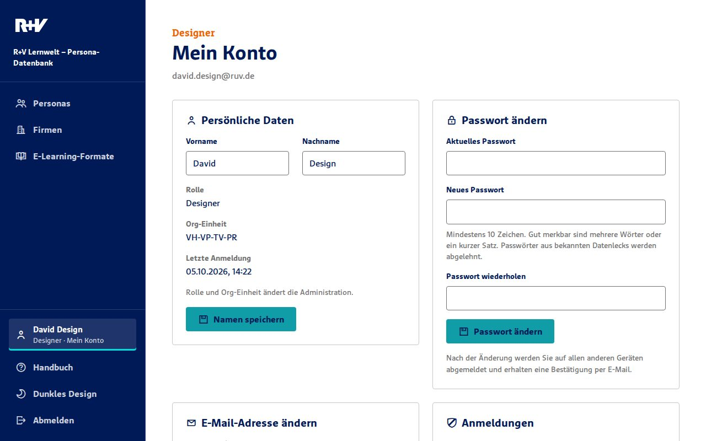
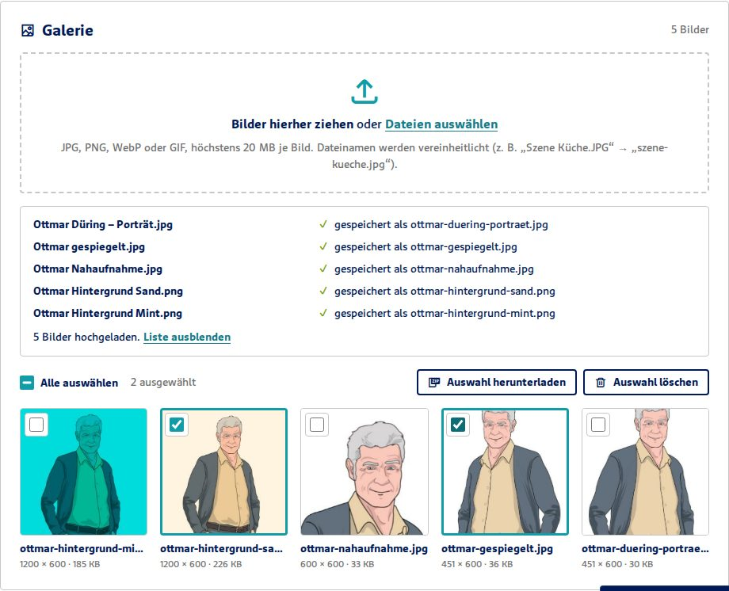
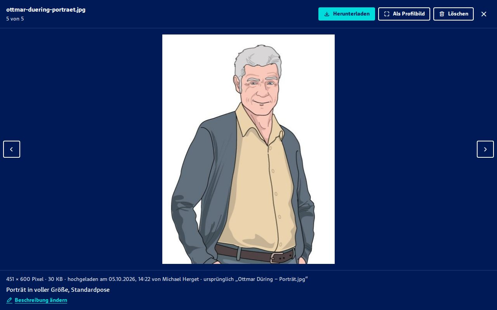
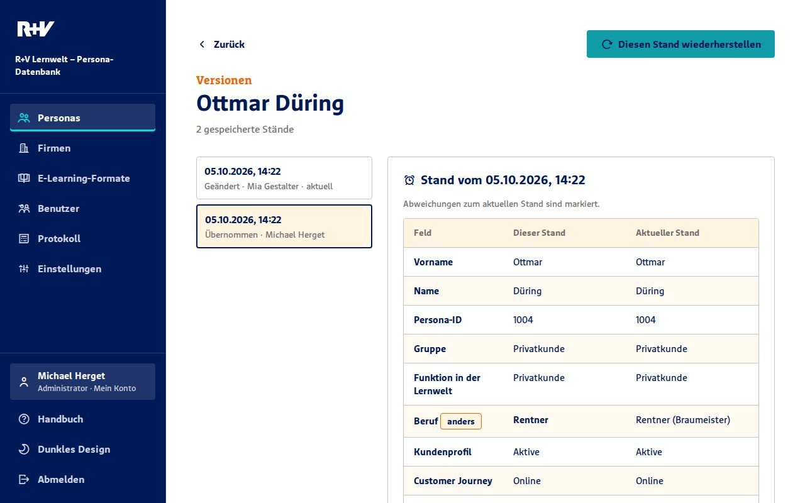
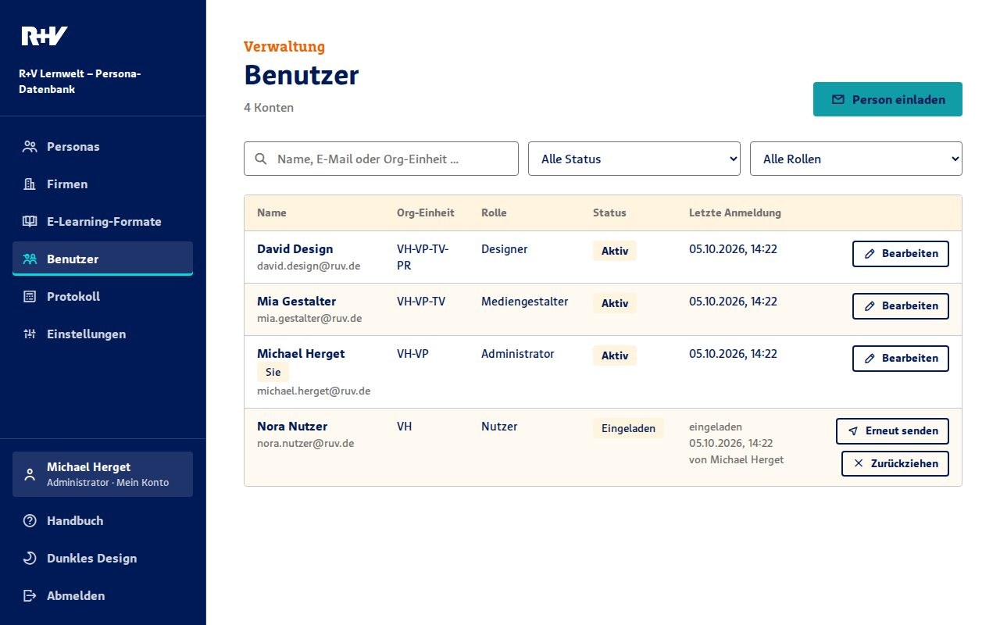
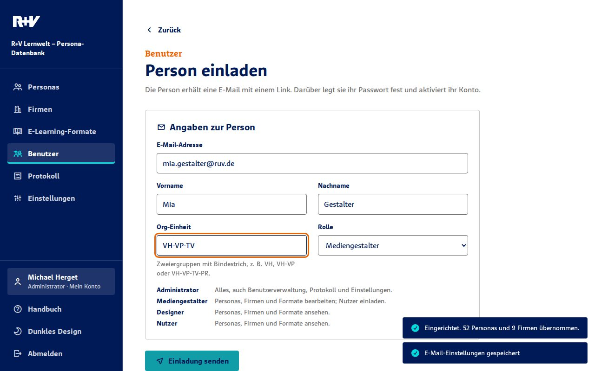
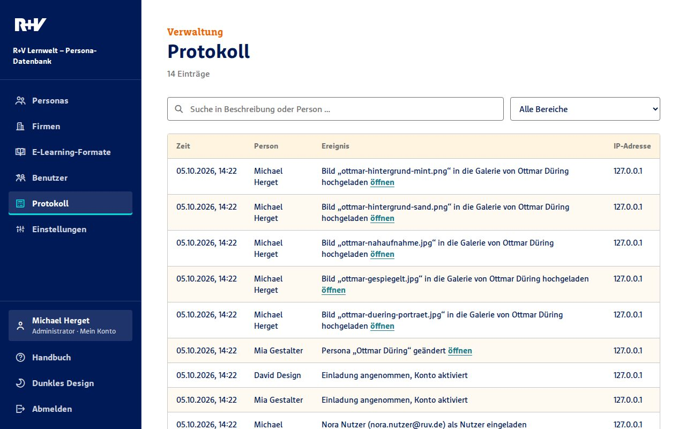

Kapitel 1
Überblick und Rollen
Die Persona-Datenbank sammelt die Figuren, die in den E-Learning-Formaten der Lernwelt auftreten: Kundinnen und Kunden, Mitarbeitende im Innen- und Außendienst, Bankberater und ihre Firmen. Wer ein neues Format plant, findet hier Lebenslauf, Charakter, Wohnsituation, Familie, Stimme und in der Galerie das Bildmaterial jeder Persona an einem Ort.
- Personas
- Die Figuren mit allen Angaben, ihrem Profilbild und ihren Beziehungen untereinander.
- Firmen
- Unternehmen und Betriebe, denen Personas angehören, zum Beispiel als Inhaberin oder Geschäftsführer.
- E-Learning-Formate
- Lernprogramme, Videos und Podcasts mit den Personas, die darin vorkommen.
Jede Person hat ein eigenes Konto mit E-Mail-Adresse und Passwort. Was sie darf, legt ihre Rolle fest:
| Funktion | Administrator | Mediengestalter | Designer | Nutzer |
|---|---|---|---|---|
| Personas, Firmen, Formate ansehen | ja | ja | ja | ja |
| Versionen ansehen | ja | ja | ja | ja |
| Anlegen, bearbeiten, löschen, Versionen wiederherstellen | ja | ja | – | – |
| Galerie ansehen und Bilder herunterladen | ja | ja | ja | ja |
| Galerie: Bilder hochladen, beschreiben, löschen | ja | ja | ja | – |
| Benutzerliste ansehen | ja | ja | – | – |
| Personen einladen | alle Rollen | nur Nutzer | – | – |
| Konten bearbeiten, deaktivieren, löschen | ja | – | – | – |
| Einstellungen, Protokoll, gelöschte Einträge | ja | – | – | – |
| Eigenes Konto (Name, Passwort, E-Mail) | ja | ja | ja | ja |
Designer dürfen zusätzlich zu Nutzern Bilder in die Galerie einer Persona hochladen und dort löschen. Weitere Unterschiede folgen später.
Kapitel 2
Anmelden und Abmelden

- Öffnen Sie die Adresse der Anwendung im Browser.
- Geben Sie Ihre E-Mail-Adresse und Ihr Passwort ein und wählen Sie Anmelden.
- Zum Abmelden wählen Sie unten in der Navigation Abmelden.
- Nach 2 Stunden ohne Aktivität, spätestens nach 12 Stunden, werden Sie automatisch abgemeldet.
- Nach 5 falschen Passwörtern ist die Anmeldung für diese E-Mail-Adresse 15 Minuten gesperrt.
- Die Meldung „E-Mail-Adresse oder Passwort ist falsch“ sagt bewusst nicht, welche der beiden Angaben nicht stimmt.
Passwort vergessen
- Wählen Sie auf der Anmeldeseite Passwort vergessen? und geben Sie Ihre E-Mail-Adresse ein.
- Sie erhalten eine E-Mail mit dem Link Neues Passwort festlegen. Der Link ist eine Stunde gültig und funktioniert nur einmal.
- Legen Sie das neue Passwort fest. Sie sind danach direkt angemeldet; alle anderen Anmeldungen werden beendet.
Kommt keine E-Mail? Sehen Sie im Spam-Ordner nach. Aus Sicherheitsgründen zeigt die Anwendung immer dieselbe Bestätigung, auch wenn es zu der Adresse kein Konto gibt.
Gute Passwörter
Passwörter brauchen mindestens 10 Zeichen. Gut merkbar und sicher sind mehrere Wörter oder ein kurzer Satz. Passwörter, die in bekannten Datenlecks aufgetaucht sind, lehnt die Anwendung ab. Ein regelmäßiger Wechsel ist nicht nötig.
Kapitel 3
Einladung annehmen

- Sie erhalten eine E-Mail „Einladung zur Persona-Datenbank der R+V Lernwelt“. Wählen Sie darin Konto aktivieren.
- Prüfen Sie Vor- und Nachnamen und legen Sie Ihr Passwort fest (zweimal eingeben).
- Wählen Sie Konto aktivieren. Sie sind danach angemeldet und landen bei den Personas.
Der Link ist 7 Tage gültig und funktioniert nur einmal. Ist er abgelaufen, bitten Sie die Person, die Sie eingeladen hat, die Einladung erneut zu senden.
Kapitel 4
Mein Konto

Unten in der Navigation stehen Ihr Name und Ihre Rolle. Ein Klick darauf öffnet Mein Konto:
- Persönliche Daten: Vor- und Nachnamen ändern. Rolle und Org-Einheit ändert die Administration.
- Passwort ändern: aktuelles Passwort und zweimal das neue. Sie bleiben angemeldet, alle anderen Geräte werden abgemeldet, und Sie erhalten eine Bestätigung per E-Mail.
- E-Mail-Adresse ändern: neue Adresse und aktuelles Passwort eingeben. Die neue Adresse erhält einen Bestätigungslink (24 Stunden gültig). Erst nach der Bestätigung gilt sie; die alte Adresse bekommt einen Hinweis.
- Auf allen anderen Geräten abmelden: beendet alle Anmeldungen außer der aktuellen, zum Beispiel nach der Nutzung eines fremden Rechners.
Kapitel 5
Personas finden

Nach der Anmeldung sehen Sie alle Personas als Kacheln, alphabetisch nach Nachnamen. Jede Kachel zeigt Bild, Name, Funktion in der Lernwelt, Persona-ID und Gruppe.
- Suche: Tippen Sie einen Teil von Name, Funktion, Beruf, Ort, Gruppe oder Persona-ID. Die Liste filtert sofort.
- Gruppe und Kundenprofil: grenzen die Liste zusätzlich ein. Aktive Filter haben einen dicken Rahmen.
Kapitel 6
Eine Persona ansehen

Oben stehen Bild, Gruppe, Name, Funktion, Beruf, die wichtigsten Eckdaten und „Zuletzt geändert am … von …“. Darunter folgen die Abschnitte Persönliche Daten, Kontakt & Wohnen, Beruf & Rolle, Biografie, Familie, Persönlichkeit, Firmenzugehörigkeit, Voiceover & Avatar und E-Learning-Formate. Ganz unten folgt die Galerie; der Knopf Galerie im Kopfbereich springt direkt dorthin und zeigt die Anzahl der Bilder.
Die Knöpfe Bearbeiten und Löschen sehen nur Administration und Mediengestaltung. Versionen sehen alle (siehe Kapitel 13).
Kapitel 7
Personas anlegen und bearbeiten
Für Administration und Mediengestaltung

- Für eine neue Persona wählen Sie in der Übersicht Neue Persona, für eine bestehende auf der Detailseite Bearbeiten.
- Füllen Sie die Felder aus. Pflicht sind nur Vorname und Name.
- Wählen Sie Speichern. Jede Speicherung legt automatisch eine neue Version an.
- Geburtstag
- Tag und Monat, ohne Jahr. Das Alter steht in einem eigenen Feld.
- Persona-ID
- Die Nummer aus der früheren Access-Datenbank, z. B. 1004. Jede Nummer darf nur einmal vorkommen.
- Auswahllisten
- Gruppe, Kundenprofil, Customer Journey, Familienstand und Geschlecht haben feste Werte, damit die Filter zuverlässig funktionieren.
- Firmenzuordnung
- Mit Firma hinzufügen ordnen Sie die Persona Firmen zu, jeweils mit ihrer Funktion dort.
- Weitere Familienangaben
- Freitext für Angehörige, die keine eigene Persona sind, und die Angaben aus der früheren Access-Datenbank.
Gleichzeitiges Bearbeiten: Hat jemand anderes denselben Eintrag inzwischen gespeichert, erscheint „Eintrag wurde inzwischen geändert“. Laden Sie die aktuellen Daten und tragen Sie Ihre Änderung erneut ein. So überschreibt niemand unbemerkt die Arbeit anderer.
Kapitel 8
Profilbild hochladen
Für Administration und Mediengestaltung

- Öffnen Sie die Persona und wählen Sie Bearbeiten.
- Wählen Sie im Abschnitt Profilbild die Schaltfläche Bild auswählen. Erlaubt sind JPG, PNG und WebP bis 5 MB.
- Verschieben Sie das Bild mit der Maus und stellen Sie mit dem Regler oder Mausrad den Zoom ein. Der quadratische Ausschnitt erscheint auf den Kacheln.
- Wählen Sie Ausschnitt übernehmen und anschließend Speichern.
Mit Ausschnitt anpassen ändern Sie später nur den Kachel-Ausschnitt. Bild löschen entfernt das Bild; über die Versionen lässt es sich zurückholen.
Liegt das gewünschte Bild schon in der Galerie, öffnen Sie es dort und wählen Als Profilbild. Es folgt derselbe Zuschnitt; gespeichert wird sofort.
Kapitel 9
Galerie
Jede Persona hat eine Galerie für ihr Bildmaterial, zum Beispiel Varianten, Szenen und Posen. Alle angemeldeten Personen sehen die Galerie und können Bilder herunterladen. Hochladen, beschreiben und löschen dürfen Designer, Mediengestaltung und Administration.

Bilder hochladen
- Öffnen Sie die Persona und scrollen Sie zur Galerie (oder wählen Sie oben den Knopf Galerie).
- Ziehen Sie ein oder mehrere Bilder aus dem Explorer in den gestrichelten Bereich Bilder hierher ziehen. Alternativ klicken Sie in den Bereich und wählen die Dateien aus.
- Die Bilder werden nacheinander hochgeladen; zu jeder Datei sehen Sie den Fortschritt und das Ergebnis.
- Dateiarten
- JPG, PNG, WebP und GIF, höchstens 20 MB je Bild. Andere Dateien werden mit „Fehler: …“ abgewiesen, die übrigen trotzdem hochgeladen.
- Dateinamen
- werden vereinheitlicht: Kleinbuchstaben, Umlaute ausgeschrieben, Leer- und Sonderzeichen als Bindestrich. Aus „Porträt Jürgen (Garten).JPG“ wird „portraet-juergen-garten.jpg“. Gibt es den Namen schon, wird „-2“, „-3“ … angehängt. Der ursprüngliche Name steht in der Großansicht.
- Doppelte Bilder
- Ist genau dieselbe Datei schon in der Galerie, wird sie nicht noch einmal gespeichert; die Liste zeigt „bereits in der Galerie“.
- Originale
- Die Bilder bleiben unverändert in voller Auflösung erhalten. Für die Übersicht entsteht zusätzlich ein kleines Vorschaubild.
Ansehen und herunterladen

Ein Klick auf ein Vorschaubild öffnet die Großansicht. Mit den Pfeilen links und rechts, den Pfeiltasten oder durch Wischen blättern Sie durch die Galerie; Esc oder das Kreuz schließt sie. Unten stehen Größe in Pixeln und MB, Datum und wer das Bild hochgeladen hat.
- Herunterladen speichert das Original.
- Beschreibung hinzufügen ergänzt einen kurzen Text, z. B. „Szene im Garten“.
- Als Profilbild (Administration und Mediengestaltung) übernimmt das Bild mit Zuschnitt als Profilbild der Persona.
- Löschen entfernt das Bild nach einer Rückfrage.
Mehrere Bilder auf einmal
Setzen Sie die Häkchen oben links in den Vorschaubildern oder wählen Sie Alle auswählen. Dann:
- Auswahl herunterladen lädt die Bilder als ein ZIP-Paket, z. B.
1004-ottmar-duering-bilder.zip. Ein einzelnes ausgewähltes Bild kommt direkt als Datei. - Auswahl löschen entfernt alle ausgewählten Bilder nach einer Rückfrage.
Wichtig: Gelöschte Galerie-Bilder lassen sich nicht wiederherstellen; sie sind nicht Teil der Versionen. Hochladen und Löschen stehen im Protokoll. Wird eine Persona gelöscht, bleibt ihre Galerie erhalten und ist nach dem Wiederherstellen wieder da.
Kapitel 10
Familienbeziehungen
Für Administration und Mediengestaltung

Familienbeziehungen verbinden zwei Personas und haben zwei Richtungen:
- Verhältnis: Was ist die gewählte Person für die aktuelle Persona? Für Ottmar Düring ist Heidrun Düring die Ehefrau.
- Gegenrichtung (optional): Was ist die aktuelle Persona für die gewählte Person? Ottmar ist für Heidrun der Ehemann.
Beziehungen pflegen Sie auf der Detailseite über + Beziehung oder im Formular unter Familie. Das × entfernt die Verbindung auf beiden Seiten.
Kapitel 11
Firmen

Die Übersicht zeigt Name, Kundenart, Branche und die Anzahl zugeordneter Personas; die Suche durchsucht Name, Branche und Ort. Administration und Mediengestaltung legen über Neue Firma Firmen an. Pflicht ist nur der Name. Unter Personas zuordnen suchen Sie Personas und tragen ihre Funktion in der Firma ein.
Kapitel 12
E-Learning-Formate

- Wählen Sie unter E-Learning-Formate die Schaltfläche Neues Format.
- Pflicht sind Name, Format-Typ (Lernprogramm, Video, Podcast) und Medienentwickler. Optional: dreistellige ID, Datei-Link und HTTP-Link.
- Haken Sie unter Personas zuweisen alle Personas an, die im Format vorkommen, und wählen Sie Speichern.
Kapitel 13
Versionen, Löschen, Wiederherstellen

Jede Speicherung einer Persona, Firma oder eines Formats legt einen vollständigen Stand ab, inklusive Bild, Zuordnungen und Beziehungen.
- Wählen Sie auf der Detailseite Versionen. Links stehen alle Stände mit Datum, Art der Änderung und Person.
- Wählen Sie einen älteren Stand. Rechts sehen Sie ihn neben dem aktuellen Stand; Abweichungen sind mit anders markiert.
- Administration und Mediengestaltung können mit Diesen Stand wiederherstellen zu diesem Stand zurückkehren. Der heutige Stand bleibt als Version erhalten.
Löschen
- Persona löschen: entfernt auch ihre Familienbeziehungen, Firmen- und Formatzuordnungen.
- Firma oder Format löschen: Die Personas bleiben erhalten, nur die Zuordnung verschwindet.
- Gelöschte Einträge stellt die Administration unter Einstellungen → Gelöschte Einträge mit allen Zuordnungen wieder her.
Kapitel 14
Benutzerverwaltung
Ansehen und Nutzer einladen: Administration und Mediengestaltung. Bearbeiten, deaktivieren, löschen: Administration

Unter Benutzer stehen alle Konten mit Org-Einheit, Rolle, Status und letzter Anmeldung. Suche und Filter grenzen die Liste ein; „Lange inaktiv“ zeigt Konten ohne Anmeldung seit mindestens 6 Monaten.
Person einladen

- Wählen Sie Person einladen.
- Geben Sie E-Mail-Adresse, Vor- und Nachnamen und die Org-Einheit ein. Die Org-Einheit besteht aus Zweiergruppen mit Bindestrich, z. B.
VH,VH-VPoderVH-VP-TV-PR; die Bindestriche setzt das Feld beim Tippen selbst. - Wählen Sie die Rolle. Mediengestalter können nur Nutzer einladen.
- Wählen Sie Einladung senden. Die Person erhält eine E-Mail mit einem 7 Tage gültigen Link (siehe Kapitel 3).
Offene Einladungen stehen als Eingeladen in der Liste. Mit Erneut senden verschicken Sie einen neuen Link (der alte wird ungültig), mit Zurückziehen löschen Sie die Einladung. Kann die E-Mail nicht versendet werden, zeigt die Anwendung den Link an, damit Sie ihn persönlich weitergeben können.
Konten bearbeiten
Die Administration öffnet ein Konto über Bearbeiten und ändert E-Mail-Adresse, Namen, Org-Einheit und Rolle. Eine neue Rolle gilt sofort; die Person wird dabei abgemeldet. Bei geänderter E-Mail-Adresse erhält die bisherige Adresse einen Hinweis.
- Deaktivieren: Die Person kann sich nicht mehr anmelden; laufende Anmeldungen enden. Wieder aktivieren hebt das auf.
- Konto löschen: entfernt das Konto endgültig. Protokoll und Versionen behalten den Namen.
- Der letzte aktive Administrator lässt sich weder herabstufen, deaktivieren noch löschen. Richten Sie am besten zwei Administratoren ein.
Inaktive Konten
Konten ohne Anmeldung seit 12 Monaten deaktiviert die Anwendung automatisch. Die Administration erhält 14 Tage vorher eine E-Mail mit den betroffenen Konten. Meldet sich die Person vorher an, bleibt ihr Konto aktiv.
Kapitel 15
Einstellungen
Nur für die Administration

E-Mail-Versand
Einladungen, Links zum Zurücksetzen und Sicherheitshinweise verschickt die Anwendung über einen Postausgang (SMTP). Tragen Sie die Daten des Postfachs ein, bei ALL-INKL zum Beispiel:
- SMTP-Server
- der Server aus dem KAS, z. B.
w0123456.kasserver.com - Port / Verschlüsselung
- 465 mit SSL/TLS (oder 587 mit STARTTLS)
- Benutzername
- die vollständige E-Mail-Adresse, z. B.
info@ruv-lernwelt.de - Passwort
- das Passwort des Postfachs; es wird verschlüsselt gespeichert und nie wieder angezeigt
- Absender
info@ruv-lernwelt.de, Name z. B. „R+V Lernwelt“
Mit Test-E-Mail senden prüfen Sie die Einstellungen sofort.
Weitere Einstellungen
- Titel der Anwendung: erscheint in der Navigation, auf der Anmeldeseite und im Browser-Tab.
- Datenhaltung: zeigt die Anzahl der Personas, Firmen und Formate sowie, wie viele Galerie-Bilder es gibt und wie viel Speicher sie belegen.
- Daten exportieren: lädt alle Personas, Firmen, Formate, Zuordnungen und Profilbilder als JSON-Datei herunter (Sicherung). Die Galerie-Bilder gehören nicht dazu (siehe Installation und Betrieb).
- Daten importieren: ersetzt den gesamten Datenbestand durch eine exportierte Datei. Die bisherigen Stände bleiben als Versionen erhalten.
- Gelöschte Einträge: gelöschte Personas, Firmen und Formate mit einem Klick wiederherstellen.
Kapitel 16
Protokoll
Nur für die Administration

Das Protokoll hält fest, wer wann was getan hat: Anmeldungen und Fehlversuche, Einladungen, Änderungen an Konten, Anlegen, Ändern, Löschen und Wiederherstellen von Personas, Firmen und Formaten, Hochladen, Löschen und ZIP-Downloads in der Galerie, Änderungen an den Einstellungen, Export und Import. Fehlversuche und Mail-Fehler sind mit Achtung markiert.
Filtern Sie nach Bereich oder suchen Sie nach Text oder Person. IP-Adressen werden nach 90 Tagen entfernt, Einträge nach 2 Jahren gelöscht.
Kapitel 17
Darstellung und Smartphone

Die Anwendung folgt der Hell- oder Dunkel-Einstellung Ihres Systems. Mit Dunkles Design bzw. Helles Design unten in der Navigation wechseln Sie selbst. Auf Smartphone und Tablet öffnen Sie die Navigation über das Menüsymbol oben links.
Kapitel 18
Installation und Betrieb
Für die technische Betreuung
Die Anwendung läuft bei ALL-INKL.COM (oder jedem anderen Webhosting) mit PHP 8.1 oder neuer, MySQL 5.7+ oder MariaDB 10.3+ und HTTPS. Zusatzsoftware ist nicht nötig.
Erstinstallation bei ALL-INKL
- Datenbank: Im KAS unter Datenbanken eine neue MySQL-Datenbank anlegen. Name, Benutzer und Passwort notieren.
- PHP-Version: Im KAS für die Domain PHP 8.2 oder neuer einstellen.
- HTTPS: Im KAS unter Domain → SSL ein Let's-Encrypt-Zertifikat aktivieren.
- Dateien: Den Inhalt des Ordners
webappper FTP in das Verzeichnis der Domain laden. - Konfiguration:
konfiguration.beispiel.phpalslernwelt-konfiguration.phpeine Ebene über dem Web-Verzeichnis speichern (oder alskonfiguration.phpim Web-Verzeichnis) und ausfüllen: Datenbank, Adresse (basis_url), ein zufälligerschluessel, eineinrichtungs_code, die E-Mail des ersten Administrators und eincron_schluessel. - Einrichtung: Die Adresse im Browser öffnen. Die Seite Erst-Einrichtung erscheint. Einrichtungscode, Name, Org-Einheit und Passwort eingeben. Die Tabellen werden angelegt und die Startdaten (52 Personas, 9 Firmen, 27 Bilder) übernommen.
- E-Mail: Unter Einstellungen → E-Mail-Versand das Postfach
info@ruv-lernwelt.deeintragen und eine Test-E-Mail senden. - Cronjob (empfohlen): Im KAS unter Tools → Cronjobs einmal täglich die Adresse
https://…/api/index.php?r=wartung&schluessel=…aufrufen lassen. Ohne Cronjob läuft die Wartung beim ersten Seitenaufruf des Tages. - Hochladen erlauben: Die Datei
api/.user.inierlaubt Uploads bis 20 MB je Bild. Greift sie nicht (Fehler „größer, als der Server annimmt“), im KAS unter PHP-Einstellungenupload_max_filesizeauf mindestens 21M undpost_max_sizeauf 24M setzen. - Galerie-Ordner: Die Galerie-Bilder liegen als Dateien in
daten/galerie(per.htaccessgesperrt, nur nach Anmeldung abrufbar). Besser ist ein Ordner außerhalb des Web-Verzeichnisses: dafür in der Konfigurationgalerie_ordnersetzen, z. B./www/htdocs/w0123456/lernwelt-galerie. - Aufräumen: Nach der Einrichtung den Ordner
einrichtung/startdatenlöschen. Er ist zwar gesperrt, wird aber nicht mehr gebraucht.
Sicherheit
- Passwörter werden mit Argon2id gespeichert, Links in E-Mails nur als Prüfsumme. Das SMTP-Passwort liegt verschlüsselt in der Datenbank.
- Anmeldungen laufen über ein sicheres Cookie (
Secure,HttpOnly,SameSite=Strict); Änderungen sind zusätzlich gegen Anfragen fremder Seiten geschützt. - Die Datei
.htaccesserzwingt HTTPS, setzt Sicherheits-Header (u. a. HSTS und Content-Security-Policy) und sperrtlib/,einrichtung/und die Konfiguration. - Profilbilder liegen in der Datenbank, Galerie-Bilder im gesperrten Galerie-Ordner. Beide sind nur nach Anmeldung abrufbar. Hochgeladene Dateien werden auf echten Bildinhalt geprüft und unter einem Zufallsnamen gespeichert.
Sicherung und Updates
- Datensicherung: ALL-INKL sichert Datenbanken und Webspace täglich. Zusätzlich empfiehlt sich regelmäßig Einstellungen → Daten exportieren und, für die Galerie, eine Kopie des Galerie-Ordners per FTP.
- Update der Anwendung: alle Dateien außer der Konfigurationsdatei und dem Ordner
daten/(Galerie) ersetzen. Die übrigen Daten liegen in der Datenbank und bleiben erhalten; neue Tabellen legt die Anwendung beim ersten Aufruf selbst an. - Den
schluesselnie ändern, sonst muss das SMTP-Passwort neu eingegeben werden.
Kapitel 19
Fragen und Probleme
- „Die Anwendung konnte nicht gestartet werden.“
- Konfigurationsdatei oder Datenbank sind nicht erreichbar. Prüfen Sie die Zugangsdaten in der Konfiguration.
- Es kommen keine E-Mails an.
- Prüfen Sie unter Einstellungen → E-Mail-Versand mit einer Test-E-Mail. Fehler beim Versand stehen im Protokoll. Sehen Sie auch im Spam-Ordner nach.
- „Zu viele Fehlversuche“.
- Nach fünf falschen Passwörtern ist die Anmeldung für 15 Minuten gesperrt. Warten Sie oder nutzen Sie „Passwort vergessen“.
- „Ihr Konto ist deaktiviert“.
- Das Konto wurde von der Administration oder nach 12 Monaten ohne Anmeldung automatisch deaktiviert. Die Administration kann es wieder aktivieren.
- „Der Link ist ungültig oder abgelaufen.“
- Einladungen gelten 7 Tage, Links zum Zurücksetzen eine Stunde, jeder Link nur einmal. Lassen Sie sich einen neuen Link schicken.
- „Eintrag wurde inzwischen geändert“.
- Jemand anderes hat gespeichert, während Sie bearbeitet haben. Laden Sie die aktuellen Daten und wiederholen Sie Ihre Änderung.
- Ein Bild lässt sich nicht hochladen.
- Erlaubt sind JPG, PNG, WebP und GIF bis 20 MB. Andere Formate (z. B. TIFF, PSD, HEIC vom iPhone) vorher als JPG oder PNG speichern. Meldet der Server „größer, als der Server annimmt“, siehe Installation.
- Der einzige Administrator kommt nicht mehr ins Konto.
- „Passwort vergessen“ nutzen. Funktioniert auch der Mailversand nicht, hilft die technische Betreuung über die Datenbank. Vorbeugend am besten zwei Administratoren einrichten.